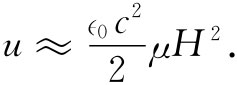

磁性材料的最重要应用之一，是在电路中——诸如在变压器、电动机等器件中。一个原因是，有了铁我们就能够控制磁场的走向，并且对于某一给定电流能够获得大得多的场。例如，那种典型“环形”电感就做得很像图36-7所示的物体。一个给定的电感与一个等值的“空芯”电感相比在体积上要小得多，所用的铜也少得多。对于一给定电感，我们可以在绕组中得到小得多的电阻，从而该电感就更接近于“理想”的了——特别对于低频的情况。定性地理解这种电感如何工作是十分容易的。如果I是绕组中的电流，则在其内部产生的场H正比于I——如式（36.20）所给出的那样。跨越线端的电压V与磁场B有关。略去绕线中的电阻，这电压V便与∂B/∂t成正比。自感L是V与∂I/∂t的比（见§17-7），因此就涉及到铁中B与H的关系。由于B远大于H，所以我们在电感中得到很大的倍数。从物理上讲，发生的情况是：在线圈里的小电流，通常产生一个小磁场，在铁里就会引起从属的小磁体全都排列整齐，因而产生了一个比绕组里的外电流要大得惊人的“磁化”电流，似乎流经线圈的电流比实际的电流大得多了。当我们把电流的方向反转时，所有这些小磁体都翻转过来——所有那些内在电流都反转了方向——从而得到一个比没有铁时高得多的感生电动势。如果我们要计算自感，则可通过能量来做——如在§17-8中所描述的那样。从电流源释放出来的能量的时间变化率为IV。电压V等于该铁芯的截面积A，乘以N，再乘以dB/dt。根据式（36.20），I=（∈0 c2 l/N）H。因而我们有
对时间积分，得到
（36.21）
注意lA乃是该环的体积，所以我们已证明在一磁性材料中的能量密度u=U/体积，由下式给出：
（36.22）
这里包含着一个重要的特点。当我们应用交变电流时，铁环中的磁性被迫循着一条磁滞回线变动。由于B并非H的一个单值函数，所以环绕一个完整循环的∫HdB积分不会 等于零，而等于该磁滞曲线所包围的面积。这样，策动源在一周期内就会付出一定的净能——一个正比于磁滞回线内面积的能量。而这些能量“损失”了。这种损失是由维持该电磁现象而造成的，但却变成了铁里的热量，这称为磁滞损耗 。为了确保这种能量损失得少一点，我们希望磁滞回线尽可能窄一些。减少回线面积的一种办法是将每周中场所达到的峰值降低。对于较小峰值的场，我们可得到一条像图36-9所示的那种磁滞曲线。并且，具有十分狭窄回线的特殊材料亦已设计出来。那种所谓变压器用铁 ——含有少量硅的铁合金——就是为了具有这种特性而被研究出来的。
图36-9 一条未达到饱和的磁滞回线
当电感环绕一小磁滞回线运行时，B和H的关系可用一个线性方程来近似。人们经常写成
B=μH. （36.23）
常数μ并非 我们以前曾用过的磁矩，它称为该铁的磁导率 （有时称为“相对磁导率 ”）。普通铁的磁导率其典型值为几千。有几种像“超透磁合金”的那类特殊合金，磁导率可高达一兆。
如果我们把B=μH这种近似式应用到式（36.21）中去，则可将一环形电感中的能量写成
因而能量密度近似地为

现在可令式（36.24）中的能量等于电感的能量LI2 /2，并解出L。从而获得
利用来自式（36.20）的H/I，就有
（36.25）
自感与μ成正比。如果你想要有为声频放大器这类东西所用的电感，你就得尝试将其运用于B-H关系尽可能线性的那种磁滞回线上（你会记得，我们曾在第1卷第50章中谈论过关于非线性系统中谐波产生的事）。对于这样的目的，式（36.23）乃是一个有用的近似。反之，如果你希望 产生谐波，则可以采用一种故意按高度非线性方式运作的电感。此时你就得利用全部B-H曲线，并用图解法或数值计算法来分析所发生的情况。
变压器通常是把两个线圈套在同一个磁性材料的环或芯上制成的（对于较大型的变压器，为了方便起见，铁芯是按矩形的尺寸比例制作的）。这样在“原”绕组中变化着的电流就会引起铁芯中磁场的变化，而磁场的变化又在“副”绕组中感生一电动势。由于穿过两绕组中每匝 的磁通量都相同，所以两绕组中的电动势比值就与其匝数的比值相同。这样加于原绕组上的电压就在副绕组中转变成不同的电压。由于为了产生必需的磁场变化就要求环绕铁芯有某个净 电流，因而两绕组中的电流代数 和就被确定，并且等于所必需的“起磁”电流。若从副绕组取出的电流增加，则原绕组中的电流也应按比例增加——和电压的变换相同，也有电流方面的相互“变换”。